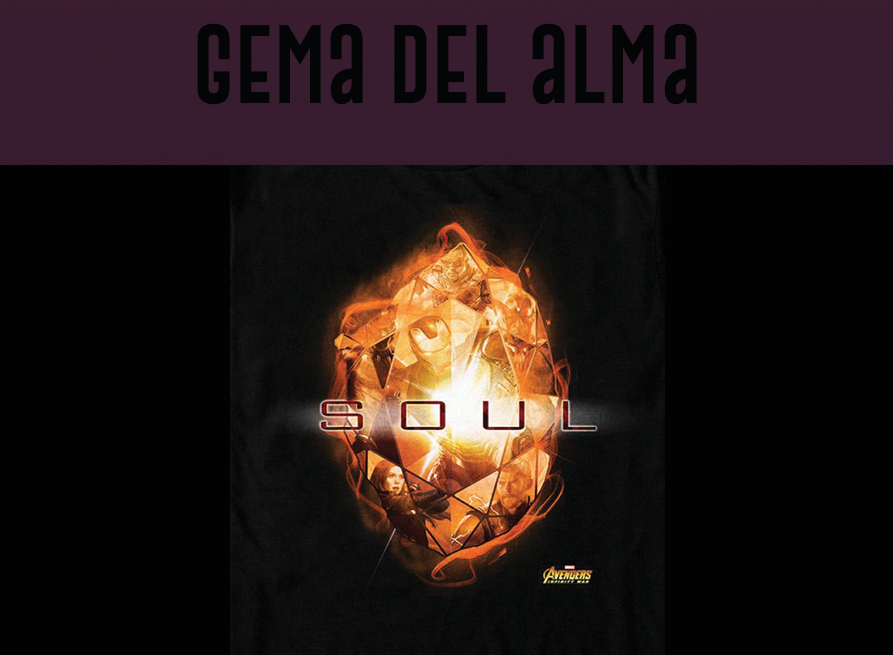

|  |
color: naranja Unidad de contención original: En el planeta Vormir su poder específico es desconocido. Poco se sabe de la Gema del Alma. Sin embargo, de acuerdo con los textos antiguos de Wong, la Gema del Alma podría ser la mayor amenaza de todas las Gemas del Infinito. Gamora sabía de la ubicación de la gema, pero mantuvo esto en secreto de Thanos. Una vez que fue capturada por su padre, ella lo llevó a su lugar de retención a Vormir, donde Johann Schmidt les dijo que solo se podía obtener la gema eliminando a un ser querido. Thanos mata a su hija y luego despierta con la Gema del Alma en su mano, y la inserta en su Guantelete del Infinito, para después poder chasquear sus dedos. Semanas después, Thanos la destruyó junto con las demás las demás. Cinco años después, una versión de la gema del año 2014 es recolectada por Clinton Barton, luego de que Natalia Romanoff se sacrificara para conseguirla, y fue usada por Bruce Banner para hacer el Blip. Más tarde vuelve a ser usada por Anthony Stark durante la Batalla de la Tierra con el objetivo de eliminar a Thanos y su ejército, causando también su propia muerte. Finalmente, Steven Rogers devuelve la gema a su tiempo, por lo que en el presente sigue destruida. apareció por primera vez en vengadores: guerra del infinito |